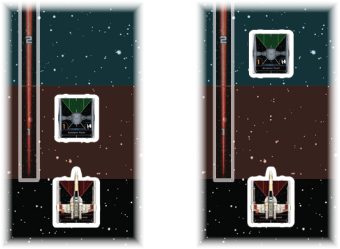

RANGE
The range is the distance between two objects as measured by the range ruler. The range ruler is divided into three numbered range bands.

To measure range between two objects, place the range ruler over the point of the first object that is closest to the second object, then aim the other end of the ruler toward the point of the second object that is closest to the first object. The ships are at the range that corresponds to the range band that is over the closest point of the second object.
While measuring attack range for an attack, the attacker measures from their attack arc to the closest point of the target ship that is in the attacker’s attack arc.
-
The following terms are used concerning range:
-
Range #–#: The range includes all of the range bands from the minimum to the maximum specified.
-
At: An object is at a specified range if the closest point of it is inside that range.
-
Within: An object is within a specified range if the entirety of it is inside that range.
-
Beyond: An object is beyond a specified range if no part of it is between the specified range and the object range is being measured from.
-
-
While measuring range to a ship, range is measured to the closest point of the ship’s base, not its ship token nor the miniature itself.
-
While measuring range to a non-ship object, range is measured to the point of that object that is closest to the ship’s base.
-
While measuring range, players use a single edge of the range ruler; the width and thickness of the ruler are irrelevant.
-
Range 0 does not appear on the range ruler, but is used for describing the range of objects that are physically touching.
-
After a ship partially executes a maneuver, it is at range 0 of the last ship it overlapped.
-
An object is at range 0 of an obstacle or device if it is physically on top of it.
-
A ship is at range 0 of another ship if it is physically touching another ship.
-
If two ships are at range 0 of each other, they remain at range 0 until one of the ships moves or rotates in a way that results in their bases no longer being in physical contact.
-
Although rare, it is possible for a ship to move in such a way that it is at range 0 of another ship (in physical contact with it) without having overlapped it.
-